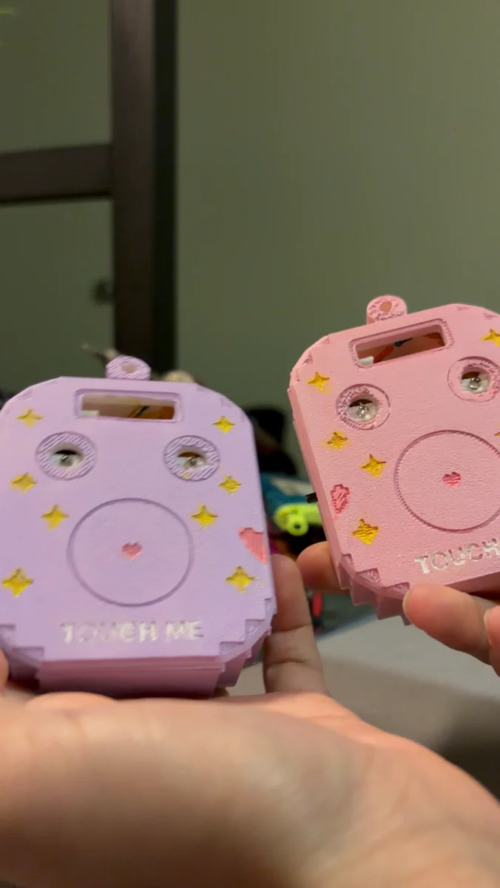

Flower Tokens — Connected Keepsakes
Two handheld devices that exchange messages over Wi-Fi and respond with light and vibration. I designed the enclosures, assembled the circuits, wrote the firmware, and tested them end to end.
Read the full build story ↗